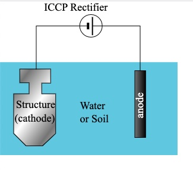
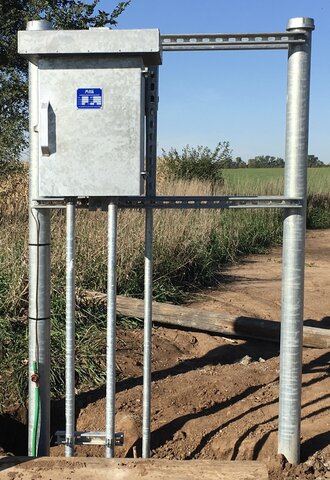

Pipeline Corrosion and Mitigation
How do we keep a pipeline from corroding? There are two processes that are commonly used.
1. The pipeline is coated with a system that has a high resistance to current flow and is a barrier between the pipe and the electrolyte.
2. Cathodic protection systems are installed to protect those portions of the pipe that, for whatever reason, does not have a coating system. Generally, these are areas of damage to the coating system.
Coating systems are the first line of defense. They are generally applied by the manufacturer of the pipe and applied in the field by the construction company. Testing is done to ensure the system will perform as designed. Common systems are Fusion Bonded Epoxy (FBE), the most common today; wraps, either a textile with mastic backing or tapes; and abrasive resistant systems, typically added over the top of a FBE system when a pipe must be pulled under a road or railroad.
Cathodic Protection systems are the second line of defense. They supplement the coating system. There are two types of systems: galvanic and impressed. Both systems apply direct current to the pipeline. In a galvanic system, magnesium, zinc or aluminum anodes are used. They are attached directly to the pipe and through the natural process, will protect the pipe. They are often referred to as a sacrificial system since the anodes will natural sacrifice themselves to protect the steel.
 With an impressed system, current is impressed onto the pipe using a rectifier and anodes. The typical anodes used in these systems are graphite, silicon cast iron, or mixed metal oxides. These materials do not sacrifice to protect the pipeline, which is why a rectifier is typically used to drive current from the anodes to the pipeline. These systems can be installed in a single hole that is typically 200 to 350 feet deep, or horizontally across an area in a line with each anode being 20 to 30 feet deep. In either case, the anodes are connected to the positive output of a rectifier, and the wire attached to the pipe is connected to the negative output of the rectifier.
** A Rectifier is a device that takes line alternating current and changes it to direct current. **
Finally, there has to be a way to ensure the correct level of protection is present. This accomplished by performing what is commonly referred to as the "Annual CP Survey".
A corrosion technician will perform this survey, taking readings at predetermined points along a pipeline. They will use a portable reference cell and digital voltmeter to measure the potential difference between the pipe and the reference cell. The reference cell is a copper-copper sulfate cell (Cu2SO4).
This survey is often performed as a current interrupted survey. Doing this allows the corrosion technician to measure the polarized potential, often refered to as the "off" reading. The value they are looking for is -0.850 Volts or more electronegative.